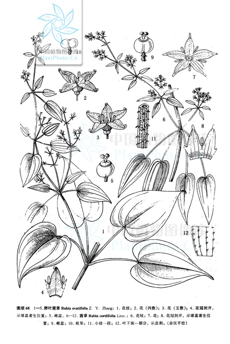

出现篇目
别名 蒨、茹䕡、地血（《别录》）、染绯草（《蜀本》）、血见愁（《土宿》）、风车草（《土宿》）、过山龙（《补遗》）、牛蔓。
古代记载 《毛诗故训传》
茹藘，芧蒐也。（《毛传》注《东门之墠》）
茹藘，茅蒐之染女服也。笺云：茅蒐，染巾也。（《毛传》注《》）
《毛诗草木鸟兽虫鱼疏》
茹鋋，茅枿，蒨草也，一名地血，齐人谓之茜，徐州人谓之牛蔓，今圃人或作畦种莳，故《货殖传》云：卮茜千石亦比千乘之家。
《毛诗正义》
“茹藘，茅蒐”，《释草》文。李巡曰：“茅蒐，一名茜，可以染绛。”陆机《疏》云：“一名地血，齐人谓之茜，徐州人谓之牛蔓。”然则今之蒨草是也（《毛诗正义》疏《东门之墠》）
《诗集传》
茹藘、茅蒐也。一名茜。可以染絳。（《诗集传》集注《东门之墠》)
茹藘、可以染絳。（《诗集传》集注《出其东门》）
《本草纲目》
别录》曰︰茜根生乔山川谷。二月、三月采根曝干。 又曰︰苗根生山阴谷中。蔓草木上。茎有刺，实如椒。 弘景曰︰此即今染绛茜草也。东间诸处乃有而少，不如西多。《诗》云茹在阪者是也。 保升曰︰染绯草，叶似枣叶，头尖下阔，茎叶俱涩，四、五叶对生节间，蔓延草木上。根紫赤色，所在皆有，八月采。 颂曰︰今圃人亦作畦种莳。故《史记》云︰千亩栀、茜，其人与千户侯等，言其利浓也。 时珍曰︰茜草，十二月生苗，蔓延数尺。方茎中空有筋，外有细刺，数寸一节。每节五叶，叶如乌药叶而糙涩，面青背绿。七、八月开花，结实如小椒大，中有细子。
当代记载 《中国植物志》
茜草 （Rubia cordifolia），茜草科，茜草属植物。草质攀援藤木；茎数至多条细长，方柱形，有4棱。叶通常4片轮生，纸质。果球形，成熟时橘黄色。花期8-9月，果期10-11月。
产东北、华北、西北和四川（北部）及西藏（昌都地区）等地。常生于疏林、林缘、灌丛或草地上。分布于朝鲜、日本和俄罗斯远东地区。

<中国植物志>